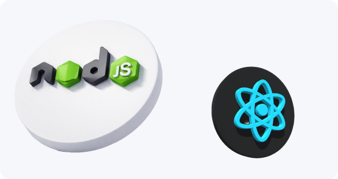

Разработка государственных и корпоративных Информационных Систем
Информационные системы (ИС) — программно-аппаратные комплексы для сбора, хранения, обработки
и передачи данных.
Государственные ИС (ГИС) автоматизируют работу госорганов и пред оставление госуслуг,
корпоративные ИС оптимизируют бизнес-процессы компаний.
Нормативная база для ГИС в РФ
ФЗ № 149-ФЗ «Об информации, информационных технологиях и о защите информации»
определяет понятие ГИС, принципы создания и эксплуатации, требования к использованию российского ПО
Постановление Правительства РФ № 676
регламентирует жизненный цикл ГИС: от проектирования до вывода из эксплуатации, обязанности операторов, порядок взаимодействия участников
Приказы ФСТЭК и ФСБ
устанавливают требования к защите информации, классы защищённости (1–4), необходимость сертификации средств защиты
ГОСТ Р 57580
стандарты безопасности финансовых ИС (для корпоративных систем в банковском секторе)
ФЗ № 152-ФЗ «О персональных данных»
требования к обработке персональных данных в ГИС и корпоративных ИС
ФЗ № 98-ФЗ «О коммерческой тайне»
для корпоративных систем с конфиденциальной информацией
Этапы разработки ИС
Концепция и анализ требований:
- определение целей и задач системы;
- аудит текущих процессов и инфраструктуры;
- выявление потребностей пользователей;
- формирование концепции и технико-экономического обоснования.
Проектирование:
- разработка архитектуры (модули, базы данных, интерфейсы);
- выбор технологий и платформ (отечественные или зарубежные решения);
- создание технического задания (ТЗ) с детальными спецификациями;
- проектирование модели угроз и мер защиты информации.
Разработка:
- написание кода и создание модулей;
- интеграция с существующими системами (ERP, CRM, СЭД и т. д.);
- настройка серверной инфраструктуры и СУБД;
- прототипирование пользовательских интерфейсов.
Тестирование:
- проверка функциональности (unit-тесты, интеграционные тесты);
- нагрузочное тестирование (имитация пиковых нагрузок);
- тестирование безопасности (пентест, анализ уязвимостей);
- юзабилити-тестирование (удобство интерфейса).
Внедрение:
- развёртывание на рабочей инфраструктуре (ЦОД, облачные платформы);
- миграция данных из устаревших систем;
- пилотный запуск в отдельных подразделениях/регионах;
- обучение пользователей и администраторов.
Эксплуатация и сопровождение:
- мониторинг работы системы;
- техническая поддержка пользователей;
- регулярные обновления ПО и баз данных;
- актуализация под изменения законодательства;
- масштабирование под рост нагрузки.
Архитектура информационныхсистем
Типичная многоуровневая структура
Уровень данных
базы данных (СУБД), хранилища данных, ETL-процессы
Уровень приложений
серверная логика (бизнес-правила, алгоритмы обработки), API для интеграции
Уровень представления
веб-интерфейсы, мобильные приложения, отчёты и дашборды
Компоненты
Серверы и системы хранения данных
Сетевое оборудование и каналы связи
Средства защиты информации (шифрование, контроль доступа, IDS/IPS);
Модули интеграции (с внешними ГИС, ERP, CRM).
Особенности разработки ГИС
Обязательная аттестация безопасности
перед вводом в эксплуатацию (проверка ФСТЭК/ФСБ)
Классы защищённости
(1–4) — определяют набор мер защиты (шифрование, ЭП, аудит доступа).
Использование отечественного ПО
приоритет для ГИС согласно ФЗ № 149-ФЗ
Интеграция с федеральными реестрами
(ЕГРН, ЕГРИП, ЕИС и др.)
Публичные сервисы
личный кабинет гражданина, онлайн-приёмные, электронные госуслуги.
Особенности корпоративных ИС
Кастомизация
настройка под специфику отрасли (логистика, ритейл, производство)
Интеграция с бизнес-приложениями
(1С, SAP, Битрикс24 и др.)
Аналитика и отчётность
BI-модули для мониторинга KPI
Мобильность
доступ с мобильных устройств для удалённых сотрудников
Гибкость и масштабируемость
адаптация под изменения бизнес-процессов
Технологии и платформы
Для ГИС
- отечественные ОС (Альт Линукс, Ред ОС, Astra Linux);
- СУБД (PostgreSQL с расширениями, Jatoba, Postgres Pro);
- облачные платформы (Яндекс Облако, VK Cloud, СберОблако);
- инструменты разработки (Java, Python, 1С:Предприятие).
Для корпоративных ИС
- веб-фреймворки (React, Angular, Vue.js);
- серверные технологии (Node.js, Spring Boot,
Django); - BI-инструменты (Yandex DataLens, Modus BI,
Luxms BI); - low-code платформы (Creatio, Mendix) для быстрой разработки.

Критерии выбора решений
соответствие законодательным требованиям;
безопасность и сертификация средств защиты;
совместимость с существующей инфраструктурой;
стоимость владения (лицензии, обслуживание);
скорость внедрения и обучения персонала;
поддержка и обновления от вендора;
возможность масштабирования и кастомизации.
Тренды
Импортозамещение
переход на российские ОС, СУБД, облачные сервисы
ИИ и аналитика больших данных
прогнозная аналитика, чат-боты для госуслуг
Цифровые двойники
прогнозная аналитика, чат-боты для госуслуг
Микросервисная архитектура
гибкость и отказоустойчивость